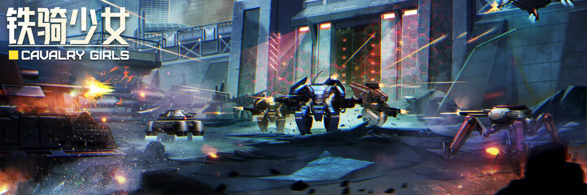
铁骑学说: 自从铁骑被创造出来, 并在军事任务中证明了其独特的战略价值后, 各大政权便围绕它展开了一场新的军备竞赛, 各种与铁骑相关的技术和装备不断涌现, 然而, 科技进步和成本投入, 并不总是与战略意义成正比, 无数案例都表明了, 只有根据战局环境进行有效搭配, 并符合驾驶员的习惯和作战方式, 才能取得胜利, 因此作为铁骑队长的你, 必须深入了解这些因素, 才能成为一名优秀的指挥官……
探索组合: 铁骑装配也是游戏的亮点和玩法, 这毕竟是个射击游戏, 如何构筑出强大且有趣的机甲亦是它的乐趣, 可以说你的大部分工作, 都是围绕着如何装备展开的, 你需要了解不同武器的特性, 熟悉小队各台铁骑的性能, 掌握驾驶员的个性特长, 分析战场的天气和地形要素, 评估敌军的战力强弱特点, 针对不同作战目标采用不同策略, 才能在这场残酷的战争中常胜不败, 而本章便会围绕着这一切来展开
游戏提供了数十种不同的武器, 涵盖[远程/近战]多个种类, 根据子弹类型还能被进一步细分为[动能/高爆/喷射/电弧]等多个类别, 它们当中的绝大多数还可以再进一步升级, 并且有数十种功能各异的配件可选用, 甚至能将不同类别的武器进行融合, 总之, 武器系统是丰富且庞大的, 下面会针对不同类别的武器做个简评, 以便帮你快速建立起一个全面的认知, 关于武器更多的细节, 可以查阅 武器列表.html
————
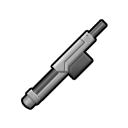 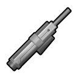 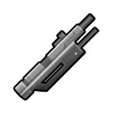 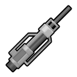 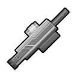 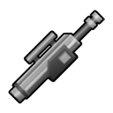 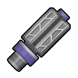
步枪类: 包括[老式步枪/老式步枪A1/制式步枪/制式步枪A3/制式步枪B2/制式步枪B1/破甲步枪], 它们是最基础的武器, 各方面的数据都中规中矩, 既没有明显的短板, 但也没什么特色, 硬是要说优点, 恐怕也只剩下便宜了, 无论是弹药费或维修费都相当低廉, 在资金紧张时或许会有妙用, 尽管通过合理的搭配, 这些步枪也能用到中后期, 只是玩起来略显乏味, 它们更多的时候会被当做其他武器的维修材料
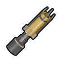 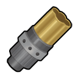 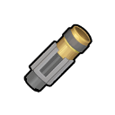 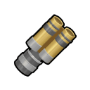 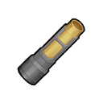
霰弹类: 包括[散弹枪/泵动炮/猎鹿弹/双管散弹/速射散弹枪], 它们的特征是, 每次扣动扳机都会射出多颗子弹, 呈现出扇形的范围杀伤, 这类武器在初期尤其好用, 特别合适对付敏捷或集群的敌人, 无需精确瞄准, 操控起来也较为省心, 但它们破甲能力不足, 中后期面对重甲单位会显得乏力, 如果想继续使用, 就得考虑安装破甲配件了, 或者是安装冰火模块, 打出装甲融化的效果(可以让敌人 -80% 护甲)
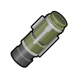 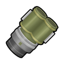 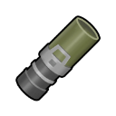
高爆类: 包括[加农炮/榴散炮/速射榴弹], 高爆类武器的特点是, 当炮弹击中了敌人或障碍物, 会产生范围性爆炸伤害, 而受到爆炸伤害会导致机体进入短暂的眩晕状态, 因而是对付群集敌人和重甲单位的利器, 但它们的缺陷也很明显, 就是不好打那些体积小且移动迅猛的敌人, 瞄准始终是个难以解决的问题, 如果选用了这种武器, 最好是在副手配备一把散弹枪或冲锋枪, 针对不同的环境和敌人选择性开火
————
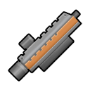 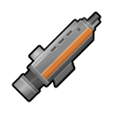 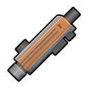
冲锋枪: 包括[冲锋枪/冲锋枪A2/冲锋枪B2], 冲锋枪一直是个不起眼的类别, 因为它们的伤害和破甲都不行, 所以被众多玩家所忽视, 但实际上它们拥有最高的装弹量和极限的射击速度, 如果为它们搭配上可以施加元素反应的配件(例如[冰冻模块/火焰模块/电磁模块]), 走爆炸和控场的路线, 那么它们也能有不俗的表现, 尽管上限不高(元素伤害基本都是固定伤害), 但成型后玩起来却有颇为有趣, 值得一试
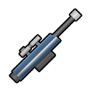 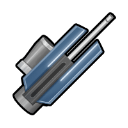 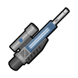
狙击枪: 包括[轻型狙/重型狙/速射炮], 狙击枪是高伤害的代表, 它们的射程也普遍较远, 这可以让我们在敌军的攻击距离外就解决对方, 因而是不错的决战武器, 但它们的缺陷也十分明显, 就是射速低, 装弹时间长, 且需要精确瞄准, 这使得它们在面对小型且敏捷的敌人时力不从心, 一旦被贴身就很麻烦了, 如果你使用它们, 可以尝试融合高爆类的武器, 让子弹获得爆炸效果(AOE 可弥补单发武器的缺陷)
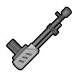 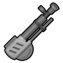 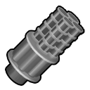
机枪类: 包括[轻机枪/重机枪/火神炮], 机枪类是介于[冲锋枪/狙击枪]之间的武器, 它们[弹夹大/射速快/射程远/伤害高], 尽管没什么属性是最顶尖的, 却很少有敌人能顶住它们的扫射, 当然缺陷也很明显, 就是换弹时间长且槽位需求高, 除了圣骑兵号, 其他铁骑都无法双持, 如果你选用该武器, 应该把装配的重点放在降低它的换弹时间上, 保证不会有太长的输出空档期, 持续性的火力覆盖最能使人安心
————
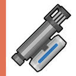 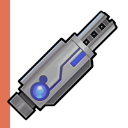
元素枪: 包括[水弹枪/磁电冲锋枪], 元素枪的面板参数相对较差, 其主要价值在于子弹自带元素效果, 例如水弹枪可添加潮湿的 Debuff, 磁电冲锋枪可为敌人添加麻痹的 Debuff, 但如果子弹被抵抗(既破甲失败), 则无法生效, 在过去, 这类武器较为鸡肋, 因为参数不行, 普通武器也可通过安装元素模块来模拟, 但现今, 磁电武器由于新增了散弹和狙击的子类, 且有专属配件, 实用性提升了许多, 值得尝试
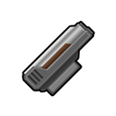 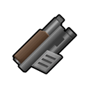
手枪类: 包括[制式手枪/微型手炮], 手枪类武器的最大特点, 是槽位需求数低, 它们的即便升到最高级, 槽位需求也只有 6, 也就是说, 几乎所有机体, 包括作战单元和无人机都可以装备, 甚至也能作为某些载人主机的备用副手武器, 主打的就是一个谁都能用, 然而, 槽位需求少, 也就意味着无法安装太多的武器模块, 这也就决定了它们的上限也不够高, 应急或打个辅助或许还行, 要当主力武器就不够格了
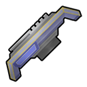 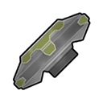
盾牌类: 包括[防爆盾/尖锐盾], 防爆盾是当前唯一的远程防御武器, 它的槽位数为 0, 所以无法装备任何配件, 但因此也没有槽位限制, 你可以把它装到任意机体上(包括无人机), 甚至载人主机在双手持握重武器时, 也还是能再装上它(只要你不嫌重), 不过在举起时将无法进行攻击, 而尖锐盾则是当前唯一的近战防御武器, 它无法防御远程攻击, 对敌人的近战攻击成功执行盾反防御, 可对敌人造成眩晕效果
————
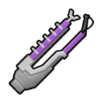 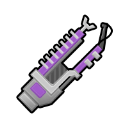 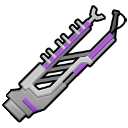 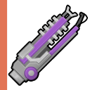
电弧类: 包括[电弧枪/放电炮/长距电弧枪/聚焦电弧枪], 电弧类武器的伤害都不是很高, 但它们射出的电弧会自动在多个敌人之间跳转, 所以算是种 AOE, 且免去了瞄准的麻烦, 这在对付小型且高速的敌人时效果拔群, 也可以说是最不考究操作的武器了, 不过这类武器难以穿透能量护盾(伤害仅剩 33%), 如果你选用了这类武器, 最好是通过融合射线武器, 得到"电弧折返核心"模块, 它可以提升对护盾的伤害
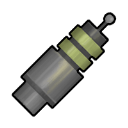 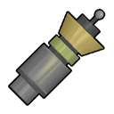 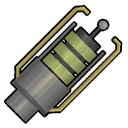 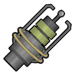
射线类: 包括[切割射线/长焦射线/聚焦射线/长距聚焦射线], 射线类武器和电弧类武器有不少相似的地方, 例如它们都可无视机体护甲, 却难以穿透能量护盾(伤害仅剩 20%, 但可通过融合电弧武器, 得到"射线能量核心"来提升对护盾的伤害), 但射线类武器的伤害要比电弧类高一些, 只是在发射前需要短暂预热, 这就造成了些许迟缓, 且需要明确的瞄准, 再通过扫射来实现 AOE, 总的来讲, 不如电弧类方便
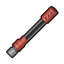 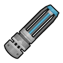 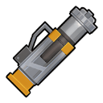 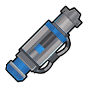
喷射类: 包括[喷火器/冰喷雾/喷油枪/喷水枪], 喷射类武器无法造成直接伤害, 但是它们能施加元素效果, 当两个不同的元素效果叠加, 还能造成影响更大的 Debuff, 也就是说, 喷射类武器其实更多的时候是用来打配合或控场的, 而当它们单独存在时, 意义就非常有限了, 一般是明确想制造出某种元素效果, 才会选择装备它们, 元素效果或叠加效果的系统较为复杂, 如果想了解更多, 可参阅 名词解析.html
————
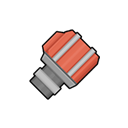 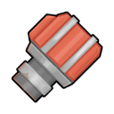 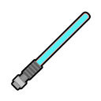 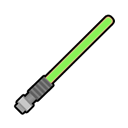 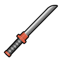 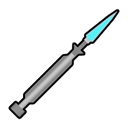 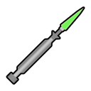
近战类: 包括[动力拳套/高能拳套/光剑/光子薙刀/电子胁差/光矛/光枪/光戟/电光斧/高能电光斧]等, 实际上近战武器可再细分为[拳套/刀剑/枪矛/战斧]等等, 但这种细分仅影响少数配件的安装, 实际意义就不是很大, 尽管近战武器的攻击可无视护甲护盾, 但由于近战的操作难度较高, 除非是玩家想自我挑战, 否则一般还是会以远程为主, 所以这里也不再深入了, 如果你开始研究近战, 那也就不算新手了
肩扛类: 包括[肩扛航炮/重型肩扛航炮/肩扛火炮/重型肩扛火炮/肩扛火箭炮/重型肩扛火箭炮/肩扛式电磁脉冲/重型肩扛式电磁脉冲]等, 肩扛类武器过去是属于挂件, 但现在已被拆分出来作为单独的一个武器类别, 尽管它们也有槽位数量的区别, 但它们不像常规武器, 机体的装备数量是固定的(主力战机可装备两台, 作战单元只能装备一台), 槽位仅影响配件的最大安装数量, 总之, 它们是很不错的辅助武器
终极类: 包括[治疗枪/熔岩喷雾/磁轨炮/炼狱射线/雷神焚天炮/高斯狙击步枪]等, 它们是武器的终极形态, 但并非由低级武器升级而来, 而是以多种武器加上核心为材料, 在合成界面被制作出来的(治疗枪除外, 它是科罗库的忠诚奖励, 无法制造, 只能购买), 终极武器往往被玩家们当作"毕业武器", 因为它们的面板参数比较高, 输出和伤害很可观, 但请不要盲信, 它们是沉重且昂贵的, 你能承受这些代价吗
————
在武器的选择上, 其实并没有所谓的对错, 每种武器都有它适用的场景, 由于武器还可以通过配件来实现强化, 所以只要搭配得当, 它们都是能发挥巨大作用的, 因此, 请不要给自己设限, 尝试根据场景需求和铁骑特点, 挖掘武器特性, 合理做出选择吧, 这本身也是游戏的一种乐趣, 当然, 你最好是在游刃有余的情况下再进行探索, 因为有些场景的难度较高, 资源也不够丰富, 胡乱投资武器, 可能影响通关
游戏为武器提供了上百种不同的配件, 而配件又可被分为普通配件与融合配件, 它们能增强武器在某方面的参数, 或为武器提供额外特性, 装备多意味着玩法丰富, 但也很容易导致新手因选择过多而头晕目眩, 你当然可以自行探索不同的搭配, 但如果图省事, 也可参考以下几个现成的配置, 等熟悉了系统之后, 再进行其它尝试, 而关于普通配件和融合配件的详情, 可以查阅 武器配件.html / 武器融合.html
————
武器名称: 散弹枪;
槽位数量: 普通 10, 融合 08 / 归属种类: 动能, 散弹;
武器优势: 廉价, 初期可得, 杀伤范围较大 / 短板缺陷: 破甲低, 射击间隔与换弹时间长;
普通
配件
融合
配件
Rest
× 02
该配置可作为所有散弹武器的参考, 散弹枪A11S杀伤范围大, 对小体积或敏捷型敌人有优势, 但是子弹破甲能力不足, 针对该劣势, 可以通过为武器装配[冰冻模块/火焰模块], 让子弹给敌人施加[寒冷/燃烧]效果, 当这两种效果并存时, 会转换成装甲融化, 能减少敌人 80% 护甲, 在此基础上, 如果能再降低输出间隔, 就堪称完美了, 值得一提的是, 初期缺乏破甲手段, 可靠近敌人近身射击, 用子弹数堆伤害
————
武器名称: 冲锋枪;
槽位数量: 普通 10, 融合 10 / 归属种类: 动能, 导轨;
武器优势: 轻巧, 初期可得, 射击速度极快 / 短板缺陷: 子弹的伤害过低, 穿甲能力不足;
普通
配件
融合
配件
Rest
× 03
该配置可作为所有冲锋武器的参考, 冲锋枪A2S12相对轻巧, 且槽位需求也不高, 所以作战单元和炮塔也适用, 由于伤害与穿甲都比较弱, 因此改装重点被放在了导轨专属的榴弹配件, 借助极高射速和大额弹夹, 可以实现每秒都有榴弹被抛出, 而榴弹会造成无视护甲的范围性爆炸伤害, 就可以很好的弥补武器缺点, 值得一提的是, 融合散弹武器后, 如果榴弹抛出那发子弹触发了散弹效果, 则榴弹也会变成多颗
————
武器名称: 轻机枪;
槽位数量: 普通 15, 融合 06 / 归属种类: 动能, 机枪;
武器优势: 射速快, 射程远, 弹夹容量较高 / 短板缺陷: 沉重, 装弹时间长, 槽位需求高;
普通
配件
Rest
× 03
融合
配件
Rest
× 01
该配置可作为所有机枪武器的参考, 轻机枪M12A对机体速度影响较低, 大额弹夹能实现连续开火, 可形成有效的火力压制, 但缺点是换弹时间超长, 输出存在空档, 对此可利用剩余槽位, 安装更多减少换弹时间的"换弹机"模块和"供弹匣"模块, 并重点提升驾驶员的换弹能力, 再为驾驶员装备能减少换弹时间的"玉增幅"饰品, 通过以上这些优化, 将换弹时间压到极限, 只要火力输出不中断, 战场上就无所畏惧
————
武器名称: 雷神炮;
槽位数量: 普通 18, 融合 09 / 归属种类: 电弧, 远程;
武器优势: 威力大, 自动追踪, 范围性攻击 / 短板缺陷: 沉重, 易老化, 对护盾会有减伤;
普通
配件
Rest
× 06
融合
配件
Rest
× 03
该配置可作为所有电弧武器的参考, 雷神焚天炮是电弧类武器的终极答案, 高伤害且自动瞄准, 用起来就格外省心, 但它也沉重且易老化, 所以需要针对性地优化, 可为机体多装几个"速度模块"和"转轴模块"解决减速问题, 其次是安装"维护模块"并提升角色的武器维护能力以降低老化率, 最后是融合"射线类武器"得到"电弧折返核心"以提升护盾伤害, 或者是多装备几个"快子跃迁模块", 增大穿透护盾的概率
————
武器名称: 辉进炮;
槽位数量: 普通 21, 融合 10 / 归属种类: 射线, 远程;
武器优势: 威力大, 射程超远, 带电弧伤害 / 短板缺陷: 沉重, 易老化, 对护盾会有减伤;
普通
配件
Rest
× 09
融合
配件
Rest
× 03
该配置可作为所有射线武器的参考, 辉进炮ZM12是射线类武器的终极答案, 威力巨大且射程超远, 但它也容易老化且非常沉重, 所以需要针对性地优化, 可为机体多装几个"速度模块"和"转轴模块"解决减速问题, 其次是安装"维护模块"并提升角色的武器维护能力以降低老化, 最后是融合"电弧类武器"得到"射线能量核心"以提升护盾伤害, 或者是为武器多装备几个"快子跃迁模块", 以增大射线穿透护盾的概率
————
在武器的装配上, 前面这五个案例提供了一个基本概念, 如果没什么想法, 那么照抄即可, 说到底无非就是优先保障伤害与破甲, 剩下的就是填补短板了, 因为武器是木桶效应, 战场的环境瞬息万变, 你需要的是通用性方案, 而不是一味的加强优势, 尽管理想情况是多准备几套武器, 再根据场景适配, 但你的资源未必能有这么富余, 临场切换装备的操作也略显繁琐, 所以弄把均衡又可靠的武器, 总是没错的
我方可控制的铁骑, 数量虽不多却各有特点, 而驾驶员们也有自己的作战风格, 所以选用合适的武器也颇为重要, 下面将进行简单的推荐, 基本原则是, 尽量选槽位数量相符的武器, 因为槽位的多少决定了武器的上限, 低了是浪费, 高了则未必装得上, 两把低槽位武器未必会比一把高槽位武器更有用, 因此双持也是个选项, 关于铁骑的性能和驾驶员的能力等细节, 可以查阅 机体详情.html / 主角小队.html
————
名称: 游骑兵号(玛 丽);
槽位: 远程.左手10/右手10, 近战.左手05/右手05;
特点: 左右手槽位均衡, 推荐使用两把相同的武器, 装配起来简单, 也无需区分射击距离, 同时开火可造成双倍伤害;
制式步枪A3: 最高级的槽位需求正好为 10, 融合散弹可实现范围伤害;
散弹枪: 最高级的槽位需求正好为 10, 面对重甲, 可贴近敌人射击, 依靠子弹数量也能形成有效输出;
冲锋枪: 最高级需要 12 槽位, 可通过安装武器扩展槽B适配, 再配合导轨相关配件, 利用极限射击速度抛出各种榴弹, 轰炸将连绵不绝;
————
名称: 骠骑兵号(库罗库);
槽位: 远程.左手12/右手06, 近战.左手12/右手05;
特点: 左右手槽位失衡, 右手难以使用高伤害武器, 到不如直接放弃(或持盾), 改为双持终极武器, 单发更比双发强;
雷神焚天炮: 槽位需求为 18, 双持正好能适配(12+6), 只是成型较晚;
制式步枪+制式手枪: 最高级正好分别需要 12/6 槽位, 武器虽然不起眼, 但搭配得当, 输出也很可观;
磁轨炮+冰喷雾: 最高级分别需要 15/9 槽位, 可通过安装武器扩展槽AB来适配(12+3/6+3), 冻住后再进行轰炸, 敌人就没闪避的余地了;
————
名称: 龙骑兵号(桑/San);
槽位: 远程.左手06/右手05, 近战.左手12/右手12;
特点: 远程槽位的数量非常少, 是更倾向于近战的, 但通过安装武器扩展槽AB, 配合高敏捷的性能, 实战也毫不逊色;
磁电狙击枪: 最高级槽位需求 11, 正好双持, 再融合高爆可实现 AOE;
轻机枪: 可安装武器扩展槽B, 槽位变成 15(6+2+5+2), 刚好能实现双持, 高机动高火力, 平衡性极佳;
突击冲锋枪+笛卡尔智能枪: 最高级分别需要 9/8 槽位, 可安装武器扩展槽AB来适配(6+3/5+3), 尽管输出有限, 但可借助元素效果取胜;
————
名称: 弓骑兵号(赭石色);
槽位: 远程.左手18/右手05, 近战.左手05/右手05;
特点: 左手槽位数超高, 几乎就是为终极武器准备, 建议是直接双持终极武器, 如果速度允许, 右手可以装个防爆盾;
雷神焚天炮: 槽位需求为 18, 左手刚好适配, 不嫌重则右手可装个盾;
高斯狙击步枪: 安装武器扩展槽A, 双持就是 25 槽位, 这是单体伤害最高的武器, 但要注意它的流弹;
辉进炮ZM+笛卡尔智能枪: 最高级分别需要 21/8 槽位, 可安装武器扩展槽AB来适配(18+3/5+3), 笛卡尔智能枪可在射线冷却期辅助输出;
————
名称: 圣骑兵号(克莱尔);
槽位: 远程.左手12/右手12, 近战.左手08/右手05;
特点: 是所有铁骑中槽位合计数最高的, 所以实际的伤害上限也最高, 但速度也最为迟缓, 别指望有什么敏捷性可言;
高射炮: 槽位需求为 12, 是兼具高爆和机枪特性的武器, 输出有保证;
轻机枪: 最高级需要 15 槽位, 可通过安装武器扩展槽A+B来进行适配, 双持即可实现火力的连续压制;
重机枪: 最高级需要槽位 15, 类似轻机枪但输出更高, 不过对速度的影响非常大, 开火还会强制蹲据, 该方案就是放弃机动, 成碉堡了;
————
限于篇幅, 此处仅做了载人主机的远程武器内容, 近战就略过了, 因为近战操作对新手而言, 难度较高而输出相对有限, 更重要的原因是, 任意武器的装备都会降低铁骑的移动速度和转向速度, 如果坚持要把近战武器也搭配到极限, 就需要耗费更多机体配件槽位来解决速度问题, 这样一来, 铁骑在其他方面就会有所不足, 结果反而会导致总体的强度下降, 因此大多数玩家都只会选配一套武器, 而不是全都要
铁骑的装备当然不止于武器, 还有各种用于不同部位的机体配件, 它们的数量与种类也非常多, 既有用于提高防御的护甲, 也有用于提高速度或抗性的改装, 乃至于夜战照明的灯具和各式各样的投掷炸弹, 与武器相比, 它们的安装并没有槽位的限制, 但是不同的机体不同的部位, 可安装的配件数量也是不同的, 下面我们将根据安装部位进行区分, 做一个简单的宏观介绍, 让你对这些装备能有一个大概的认识
————
主体强化: 主要是提升机体血量和各种防御, 包括动能武器穿甲抵抗, 高爆武器防爆能力, 元素效果伤害减免等等, 上表中的前七个几乎是必装模块, 其余的就根据需要安排了, 值得一提的是, 其中的"无人机强化模块"是唯一能提升无人机属性的配件, 但它会扣减主机血量, 如果你不走无人机流就没必要装了, 铁骑可安装的数量可查阅 机体详情.html(P02:主体上限), 配件的更多细节可查阅 主体强化.html
————
足部强化: 主要是提升机体速度, 包括移动速度和转向速度, 其中又以"速度模块"和"转轴模块"最为重要的, 因为可以消除由装备所导致的减速, 尤其是当你使用了沉重武器, 甚至需要装备多个这种模块来抵消掉影响(配件不可以被重复安装, 但不同等级的不算重复), 除此以外的其它足部配件就不是很关键了, 铁骑可安装的数量可查阅 机体详情.html(P02:足部上限), 配件的更多细节可查阅 足部强化.html
————
机身挂件: 机体拥有八个常规挂件槽位和两个头部挂件槽位, 常规挂件是有方向性的, 如装在铁骑正前方的护甲就只保护身前 45 度范围, 部分挂件还拥有独立的血量, 如果被打爆了则本场战斗就不再生效, 但下次战斗前会自动修复(免费), 一般都是身前装护甲挂件, 身后装速度挂件, 再正面对敌以兼顾防御速度, 但如果你对走位有信心, 也可以放弃护甲, 全堆速度, 配件的更多细节可查阅 机身挂件.html
————
机体改造: 所有的载人主机都拥有六个改造槽位, 但其中的两个已经被铁骑自带的配件所占据, 而且这些自带的配件几乎都是不可拆卸的, 因此可操作的槽位就只剩下了四个, 机体改造的配件类型也非常丰富, 既有用于扩展武器槽位, 也有用于降低脑负荷或提升铁骑对某种武器的防护, 总而言之, 它们大多都很有用, 但部分配件安装之后就不可拆卸了, 因此务必慎重, 配件的更多细节可查阅 机体改造.html
————
投掷物品: 既有杀伤力巨大的集束弹或破片手雷, 也有施加元素效果的水炸弹和油炸弹, 以及用于辅助的烟雾弹或照明弹, 最为重要的是, 它们在战场上并非一次性的消耗品, 而是在丢出后等 CD 完结还可以继续使用, 且没有任何使用的成本, 所以是非常棒的辅助输出手段, 载人主机和作战单元都能安装它们, 铁骑可安装的数量可查阅 机体详情.html(P02:投掷上限), 配件的更多细节可查阅 投掷物品.html
————
尽管机体配件的重要性和优先级不如武器, 毕竟攻击才是最好的防御手段, 但一台战力强劲的铁骑也离不开以上这些配件的辅助, 如果你一时觉得琳琅满目难以选择, 那么可以采用补短板的方式, 既角色铁骑缺什么就装什么的, 觉得肉度不够, 就装防御相关配件, 觉得行动迟缓, 就装速度相关配件, 觉得输出乏力, 就装高伤害的投掷物品, 在弥补了不足之后, 再考虑根据作战需求, 针对性的强化某方面能力
可在整备城防的界面, 安排这些来自空中的战略支援, 这些支援又可被分为两大类, 既辅助类型和攻击类型, 安排完毕后在战场上按 Alt, 再根据提示按方向键即可调用这些支援(如果需求方向键按错则需要重来), 这些支援和投掷物品类似, 都是等 CD 完结后, 就能被重新调用, 不过使用它们需要以战后的荣誉收益为代价, 下面我们将根据它们的类型区分, 做个简单的宏观介绍, 让你对它们能有大概的认识
————
辅助类型: 包括[空投跳雷/空投路障/空投烟雾弹/空投照明弹/空投掩体碉堡/空投机枪炮塔…], 部分空中支援是无法被制造的, 它们大多来自于某位驾驶员的忠诚度奖励, 有时在商店中也会出现, 如果看到了可以考虑购入, 尤其是纳米修复机器人, 这是最为实用的战略支援, 可恢复铁骑的 5000 的血量, 在挑战一些困难的外勤任务很有帮助, 但要注意别装"纳米合金"的机体改造配件(会让治疗效果仅剩 20%)
————
攻击类型: 包括[空袭轰炸/集束空袭轰炸/[业火]凝固油弹/[寒霜]液氮炸弹/[雷鸣]静电炸弹/精确空袭轰炸…], 都是能给予敌人大量伤害的手段, 只是在破甲能力和杀伤范围方面有所区别而已, 你可以根据要攻击的敌人类型调用合适的支援, 值得注意的是, 其中有部分空中支援是可以精确瞄准的, 例如精确空袭轰炸和半吨制导轰炸, 在召唤的时候将其定位在目标敌人身上, 即便敌人在此期间移动了也能命中
————
因为战略支援的费用会从战后荣誉收益里扣, 所以有不少玩家都不舍得用, 但有时它们真的是破局的好手段, 所以不要忽视的战略支援的安装, 也不要过于吝啬那么些荣誉值, 该调用的时候就尽管调用吧, 值得关注的是, 战略支援的 CD 还会受到天气的影响, 雨天的情况下冷却时间会被进一步延长(挺合理的), 但天气状况不影响战略支援的费用(费用的算法和 CD 时长挂钩), 更多细节可查阅 战略支援.html
可以在整备城防的界面中, 安排城防设施以抵御敌人的进攻, 这些设施又可被分为两大类, 既静态辅助类的城防物障和动态进攻类的作战单位, 在大多数防守性质的阵地战中(例如守城或护送运输队), 这些设施就会出现在战场上, 尽管可安放这些设施的"城防点"和"部署点"是有数量限制的, 但通过合理的配置, 也可发挥巨大作用, 下面我们将根据类型区分, 做个简单的宏观介绍, 让你对它们能有大概的认识
————
城防物障: 包括可以阻挡子弹的沙包, 对敌人造成伤害的地雷, 吸引敌军火力的路障, 减缓速度的铁丝网等, 而它们但当中又以不起眼的沙包最为好用, 因为沙包是区分正反面的, 从正面射来的子弹, 必须对沙包实现穿甲, 才能打到位于沙包后的单位, 而最高级的沙包穿甲抵抗高达 100, 所以对于动能武器有着非常好的防御作用, 蹲守于沙包后方的机体, 生存率会高上许多, 更多细节可查阅 城防设施.html
————
作战单位: 包括[载人主机/作战单元/机枪炮塔/照明路灯], 其中的载人主机和作战单元是有最大上场数限制的, 默认情况下只能派 2 台载人主机和 1 台作战单元上场(通过思潮奖励和驾驶员忠诚奖励可提升上限), [机枪炮塔/照明路灯]则没有数量上限, 不过城防系统总共也就提供了八个部署点给我们放置作战单位, 而且机枪炮塔也不能移动, 所以它们的帮助就没那么大了, 更多细节可查阅 机体详情.html
————
你应该重视城防物障, 尤其是沙包, 它们的作用会远超你的想象, 即便战场压力没那么大, 为铁骑减少一些损伤, 也能起到节约维修费的作用, 而作战单元和机枪炮塔的作用就相对有限了, 或者说它们的优先级没那么高, 因为作战单元不能被单独派出去执行任务, 你也不能操控它们, 而机枪炮塔不能移动, 就很容易成为活靶子, 所以建议是先武装好载人主机, 在装备有富余的情况下, 再考虑提升其它的单位
在剧情模式中, 我们的正面战场都是守在城门前歼灭来犯的敌军, 但实际上大门并不止一座(防守的小队在剧情设定上也不止一只), 玛丽所带领的小队会根据敌军攻势而在这些城门口轮流进行驻防, 门外的场景也会跟随着变化, 目前常见的有以下八个不同的地图, 每隔一段时间, 我们就可以选择切换到别的地图去(随机二选一), 无尽模式也是使用了这套地图, 虽然对战局影响也不是很大, 但了解一下也不坏
01. 职工活动区大门(MapType1): 此区域有众多被毁民用建筑, 可以迟滞敌人进攻, 但也可能会影响我方的视野和弹道;
02. 中转站前大门(MapType2): 此区域有条被摧毁的补给线, 道路上被摧毁的战车可以作为掩体, 但其他掩体少;
03. 职工宿舍大门(MapType3): 此区域有众多被毁民用建筑, 可以作为掩体, 但也可能成为敌人的掩体;
04. 第四号大门(MapType4): 此区域地形开阔, 视野非常好, 但是掩体也少, 敌人将会长驱直入;
05. 炼油厂大门(MapType5): 此区域有大量油管线, 但油管质量不太好, 会喷出油来;
06. 冷却厂大门(MapType6): 此区域有大量水管线, 但水管质量不太好, 会喷出水来;
07. 发电厂大门(MapType7): 此区域有高压输电线, 但电线质量不太好, 总是会漏电;
08. 精炼厂大门(MapType8): 此区域有大量管线, 但管线质量不太好, 会喷出水和油;
————
以下的几张地图主要是用于挑战模式, 但它们同时也会用在某些外勤任务中, 实际上除了这里罗列出来的地图, 还有其他一些地图是用于护送任务和外勤歼灭, 甚至潜入模式也有特殊的地图, 只是地图内容都是程序动态生成的, 游戏里也没有提供现成的预览截图, 有些地图尺寸还非常大, 截图之后得进行许多拼接操作, 由于雾气和敌人等因素还会干扰合并, 实在是很费劲, 因此 XJ 就偷个懒, 不逐一展示了
01. 一号战区(MapTypeChan2): 此区域有众多被毁民用建筑, 可以迟滞敌人进攻, 但也可能会影响自己;
02. 二号战区(MapTypeChan3): 此区域有众多被毁民用建筑, 可以作为掩体, 但也可能成为敌人的掩体;
03. 三号战区(MapTypeChan4): 此区域有条被摧毁的补给线, 被摧毁的战车可作为掩体, 但其他掩体少;
04. 四号战区(MapTypeChan5): 此区域地形开阔, 视野很好, 但是几乎没有掩体, 有些战术便无法施展;
战场除了白昼和黑夜的时间区别, 其实还有天气的阴晴随机状态, 它们可能也会对战局造成影响, 在阴晴的状态上, 系统会根据场景设定的参数, 在范围里取一个随机数, 这个范围介于 -100 到 100 之间, -60 以下是暴晒, -60 ~ -30 是烈日, -30 ~ 0 是炎热, =0 是晴朗, 0 ~ 30 是小雨, 30 ~ 60 是中雨, 60 以上是暴雨, 在非晴朗时, 敌我双方的机体均会附加高温或潮湿 Debuff, 甚至影响战略武器 CD
01. 白昼: 白天没什么特殊的机制, 只要不是下雨, 视野都会很好, 但无论何时, 战场上总会有些迷蒙的雾气, 那大概是被风卷起的沙尘
02. 暴晒: 炎热天气, 敌我双方都会自动获得高温的状态, 温度越高, 获得状态的间隔就会越频繁, 高温将会导致机体的爆炸抗性减 80%, 如果此时被施加了其他状态, 大概率会引起爆炸, 造成伤害并且眩晕, 所以你除了要提防敌人的攻击, 还得注意战场上各种破损的管道
03. 暴雨: 在雨天时, 敌我双方的机体都会自动获得潮湿的状态, 雨下越大, 获得状态的间隔就会越频繁, 潮湿会导致机体被子弹击中时, 受到暴击的概率翻倍, 在潮湿状态下遭遇除油腻以外的状态, 都会发展为叠加状态, 如果遭遇的是油腻, 则会触发清洗状态, 此时造成异常状态会无效化, 在雨天给自己丢个油炸弹倒也是解除异常的一种办法, 如果你想了解元素效果或叠加细节, 可以参阅 名词解析.html
04. 黑夜: 夜晚的可见度非常低, 如果没装照明设备, 则视野就仅限铁骑前方的一小块地了, 你可能需要频繁打开战略面板以查看敌人的位置, 当然, 你也可以在机体挂件的槽位上安装照明配件, 或是在整备城防的界面安置各种照明设施, 这样就不会陷入敌暗我明的险境了
————
除了白昼和黑夜, 其实在幸存模式里或无尽模式的决战中, 还有更多的时间状态, 例如黄昏和黎明, 甚至黑夜也有可见度变化, 你也可以将其理解为入夜/深夜/凌晨, 每个时间状态会持续一两个关卡, 只不过除了战场可见度的区别以外, 倒也没有其他什么影响了, 但这只是看似有时间变化, 实际上你一直都在某天循环, 因为常规情况下复制物品, 第二天价格会回归初始值, 但幸存模式的初始值是不会回归的
在剧情模式或无尽模式里, 如果你觉得战斗过于冗长或无趣, 可以尝试将铁骑都委托给 AI(剧情模式下从第七天开始才能委托 AI), 尤其是使用单发武器的情况, 因为 AI 会比我们瞄得更准, 我们只要做好运营装配, 然后在战场上加速即可(按住右侧 Alt), 对于一些外勤或 Boss, AI 可能无法顺利完成任务, 此时才需要我们介入, 下面推荐种"逃课"的打法, 如果觉得某些敌人太难对付, 也许可以参考一下
高斯狙击步枪 + 光学隐身模块 : 高斯狙击步枪是游戏中单体伤害最高的武器, 只是弹夹容量只有 1, 且装弹时间非常久, 开枪还会导致机体强制蹲据, 而光学隐身模块可让机体蹲据后进入隐身状态, 只要身上没 Debuff 敌人就无法发现我们, 这两者相互配合, 堪称完美(你可能还需要再安装"气象装甲", 避免因天气附加状态导致隐身失效)
————
毕业结语: 如果你已经看完了新手指南的三个篇章, 那你现在已经是个具备系统理论的铁骑驾驶员了, 但请不要自满, 因为作战与指挥的领域是无边无际的, 你还需要更多的实践, 希望在未来的日子里, 你能继续保持军人的本色, 勇敢无畏, 忠诚担当, 无论遇到什么困难和挑战, 都要坚定信念, 勇往直前, 愿你在军营中书写壮丽篇章, 在战场上铸就辉煌成就, 那最后, 请起立, 敬个礼, 下课啦 (*￣▽￣*)ゞ